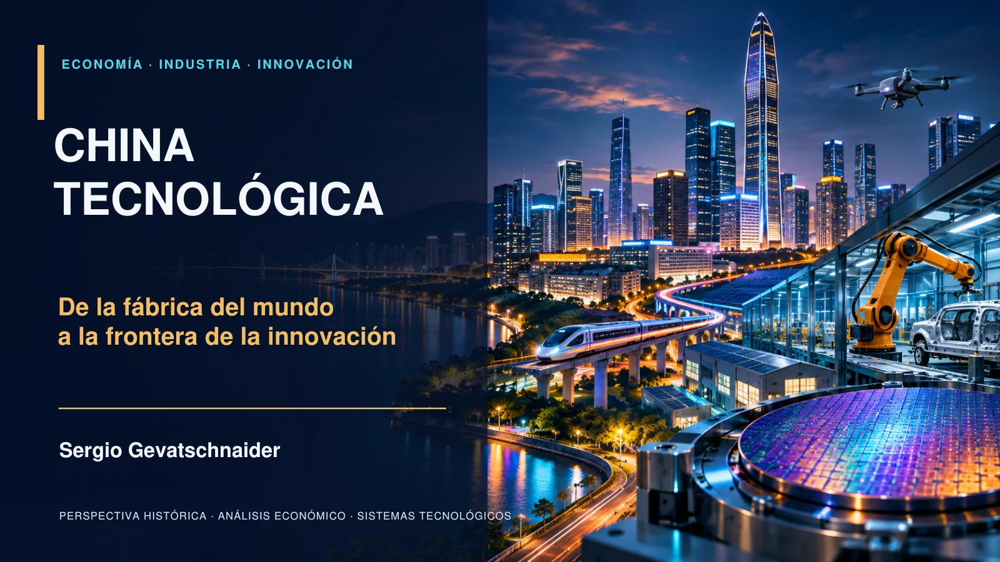

PPT 01 · 35 diapositivas por idioma
De la fábrica del mundo a la frontera de la innovación
Historia económica, política industrial, I+D, empresas, tecnologías y geoeconomía. Cinco escenarios para explorar complementariedades y restricciones.